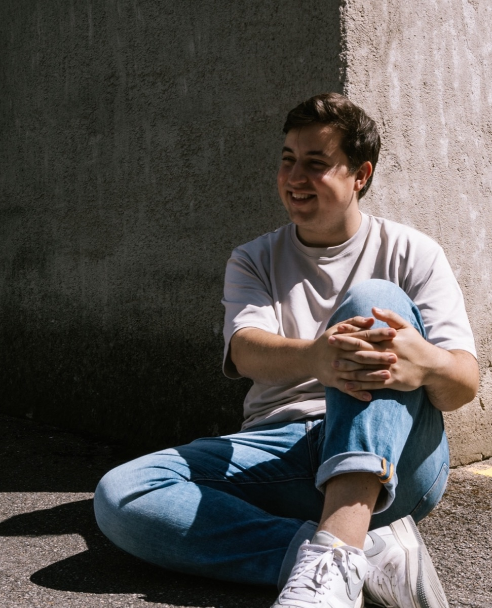
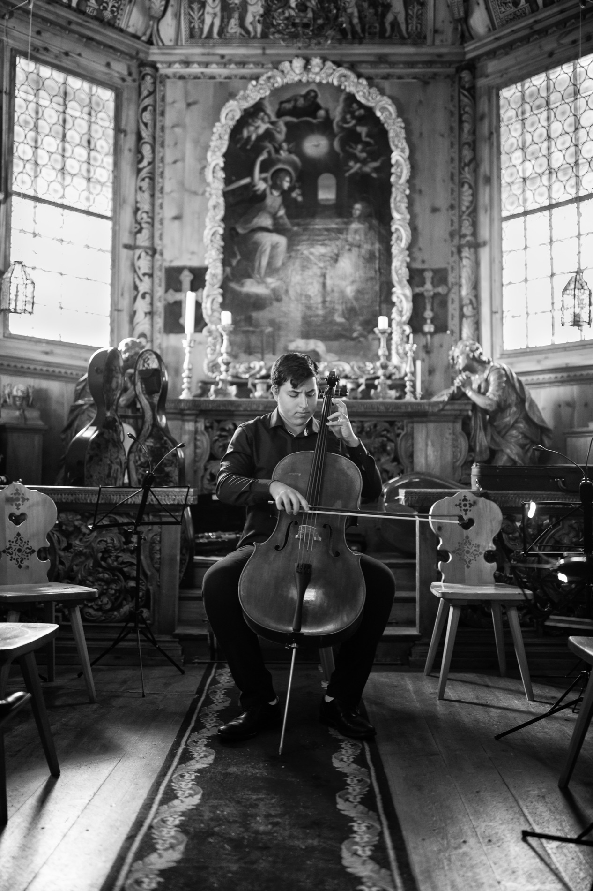

Hrvoje
Krizic.
I am a PhD student in cosmology at the University of Geneva, working on strong gravitational lensing and time-delay cosmography.
About me
I am a PhD student at the Department of Theoretical Physics, University of Geneva, working on strong gravitational lens modeling in the context of time-delay cosmography. My research aims to constrain the Hubble constant through advanced modeling techniques for high-resolution imaging data within the TDCOSMO collaboration.
I completed my Bachelor's and Master's degrees in Physics at ETH Zurich. During my time there, I served as a teaching assistant since 2021 and authored the textbook "Tutorium Mathematik fur Naturwissenschaften", published by Springer Verlag in 2024.

Research
All research
Cello
I regularly give concerts across Switzerland with different ensembles and perform as a soloist.
Concerts & recordings